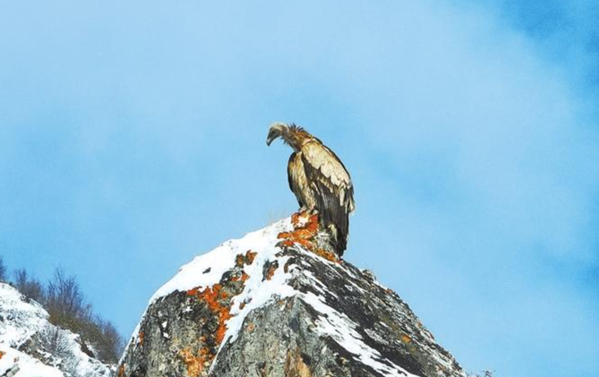
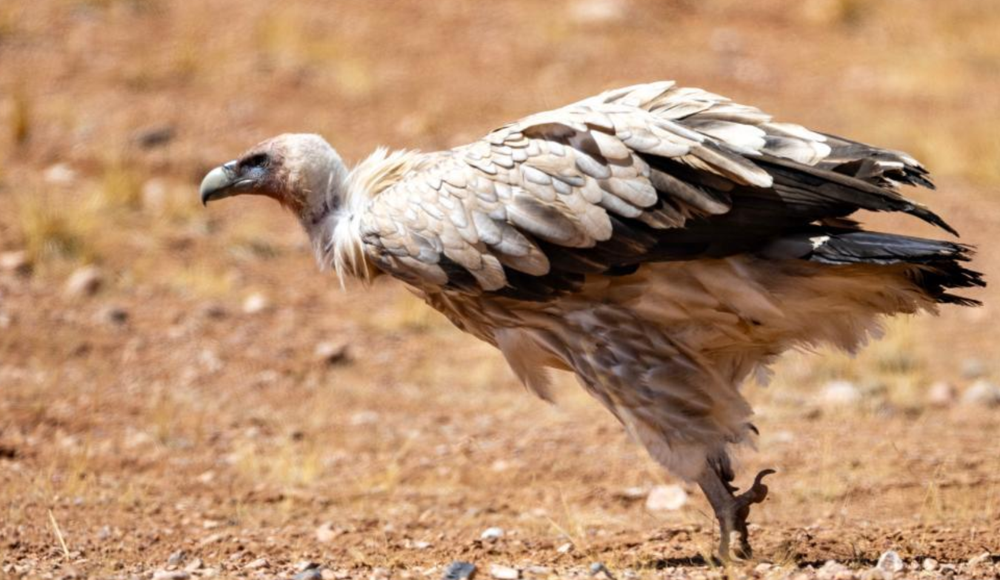
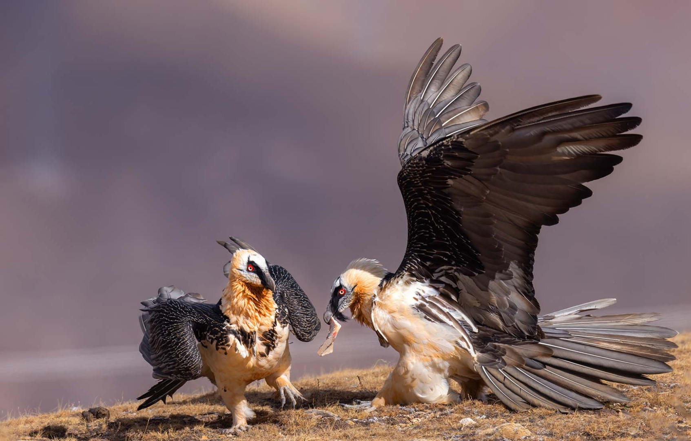
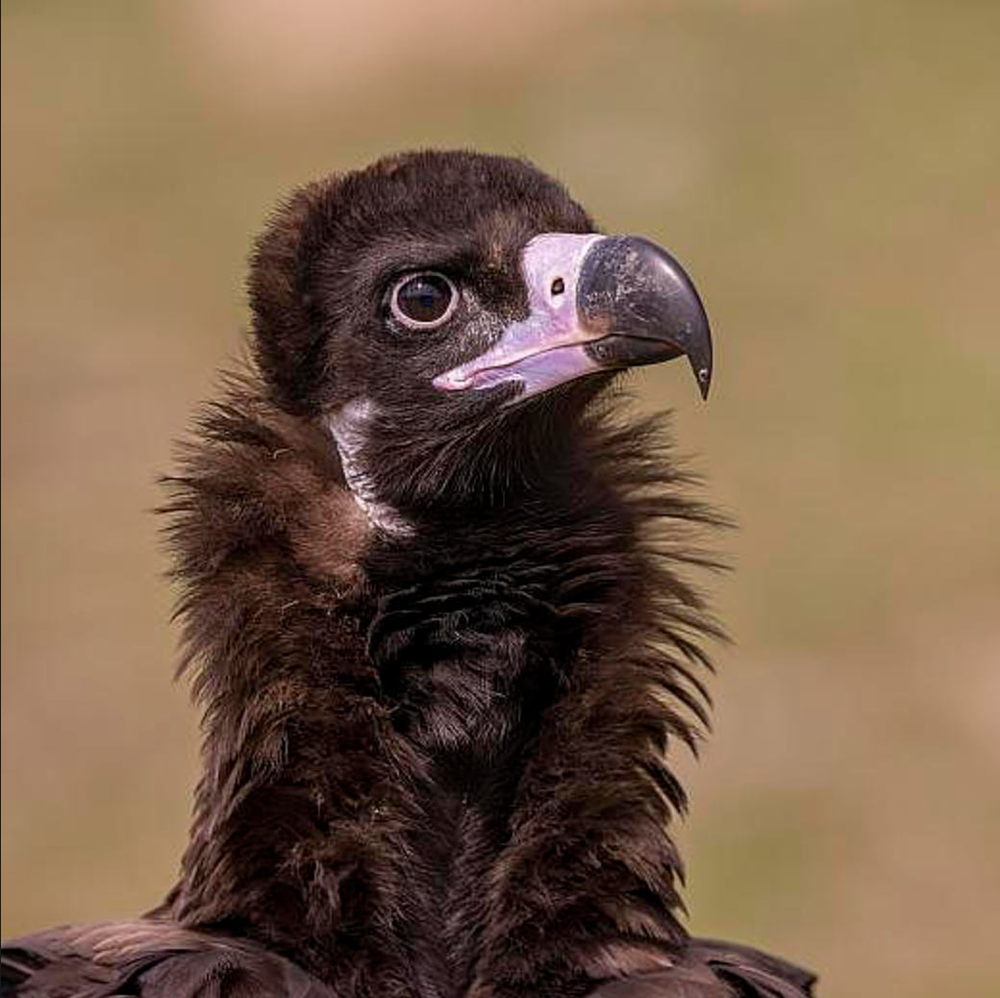
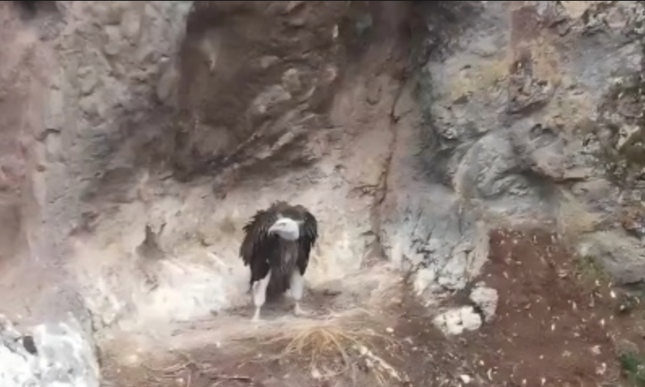

羽翼守望者


兀鹫属（Gyps）隶属于鹰科，全球约8种，主要分布于非洲和亚洲。体型巨大，体长80-100cm，翼展可达2.5m以上。羽毛以褐色、灰白为主，头部裸露，便于深入动物尸体取食。以腐肉为食，在生态系统中承担着重要清洁作用。
繁殖期营巢于悬崖上，每窝产1-2枚卵。由于农药污染、食物短缺和栖息地破坏，多种兀鹫数量急剧下降，部分已极度濒危。
📖 参考：点此处 查看国际鸟盟资料。

高山兀鹫是亚洲高山地区最大的食腐猛禽，体长约90-100cm，翼展约2.6-2.9m，上体淡褐色，下体淡色，颈羽形成“领圈”。分布于青藏高原及周边山地。
以动物尸体为食，利用上升气流盘旋，视力敏锐。繁殖期3-5月，营巢于悬崖，每窝产1枚卵。因兽药中毒，种群严重下降，被列为近危。

胡兀鹫体长约95-115cm，翼展约2.5-2.8m，头部具黑色胡须状羽毛，故名。分布于欧亚大陆山地，食腐也食骨头，能将骨头摔碎后吞食。
繁殖期4-6月，每窝产1-2枚卵。因中毒和栖息地破坏，全球种群稀少。

秃鹫体长约90-110cm，翼展约2.5-2.9m，全身黑褐色，头部裸露皮肤呈蓝色。分布于欧亚大陆山区，以腐肉为主食。
繁殖期3-5月，营巢于树上。因农药中毒，种群急剧下降，在中国为罕见留鸟。
📖 参考：点此处 查看 IUCN 评估。

兀鹫属是高山生态系统中不可或缺的清洁者，保护它们对于防止疾病传播、维持生态平衡意义重大。禁止使用对猛禽有害的兽药、保护高山草甸和悬崖是保护关键。
📖 了解更多：点此处 查看中国林草局。